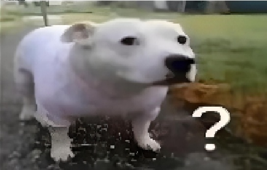

Pravě je pul devatý a místo toho abych dělal něco produktivního tak píšu tuhle sračkostránku. Nechapu proč to furt čteš. Asi jsi prokrastinátor jako já a skrolování tiktoku tě už přestalo bavit.
No tak to už si na tom špatně ale není proč vzdychat. Upřímě radši dělat random sračky a mít z toho radost než dělat celej den hovno a řikat si Proč ten život stojí tak za vyližprdel.
Samozřejmě to je otázka kterou si kladu každý den a jediný lék který jsem na to našel je tvořit. Ať už je to mona lisa nebo nějaká random kundovina co nedává smysl, prostě něco tvořit mi vždycky přineslo aspoň trochu radosti do tohodle zkurvenýho života.
Z toho zní ponaučení: něco doprdele dělej protože stejně brzo chcipneš a takle aspoň zanecháš po sobě nějakou stopu, která ostatním ukáže že si měl aspoň nějaké radostné chvíle v životě plném depresí a pití braníku z petky.
Jo a tady je ranom čoklo meme co jsem našel protože proč nenaplnit tenhle shitpage vic shitpost shitlowquality memeskama co nedavaj absolutně smysl. jakože ten pes ma asi stejnej vyraz jako ty když tuhle kravinu čteš a proto mi to přide ftipny jak židle
